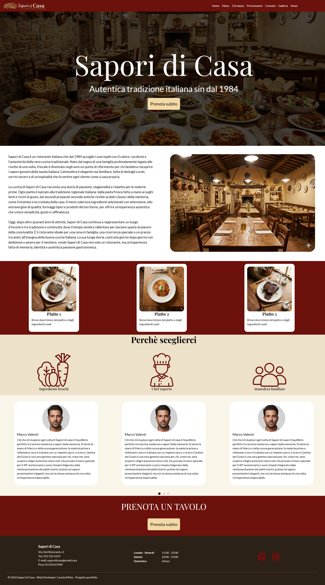
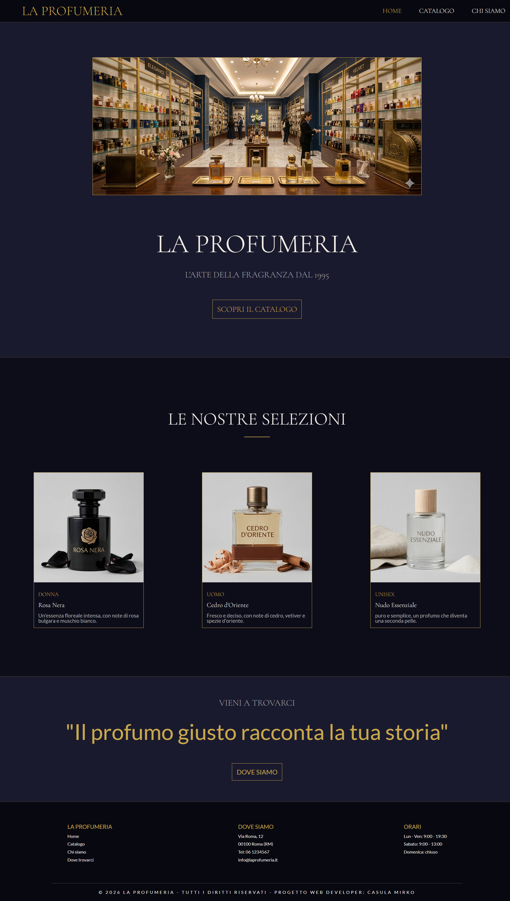

Realizzo siti web moderni e responsive.
Vedi i miei progetti
Sono un Web Developer alle prime armi con una competenza base nelle tecnologie front-end e back-end.
Appassionato di tecnologie e sviluppo, mi impegno a creare interfacce pulite, funzionali e responsive
che offrano una buona esperienza utente su qualsiasi dispositivo.
Ho acquisito competenze teoriche mediante un corso dell'Agenzia Dante Alighieri, e pratiche attraverso progetti di studio,
lavorando sia sulla struttura che sull'aspetto visivo dei siti. Sono sempre pronto ad imparare e a mettermi in gioco
in contesti dinamici e stimolanti.

Sito vetrina sviluppato per un ristorante, progettato per offrire una navigazione semplice e un design moderno.
Creare un sito semplice e intuitivo che permetta agli utenti di consultare facilmente il menu, le informazioni del ristorante ed effettuare le prenotazioni.
Un sito leggero, responsive e facile da navigare, con particolare attenzione all'esperienza utente.

Sito vetrina sviluppato per una profumeria, progettato per offrire una navigazione semplice e un design elegante.
Creare un sito semplice e intuitivo che permetta agli utenti una navigazione rapida e la consultazione di un catalogo. Studio della responsività mediante Media Queries
Un sito leggero, responsive e facile da navigare.